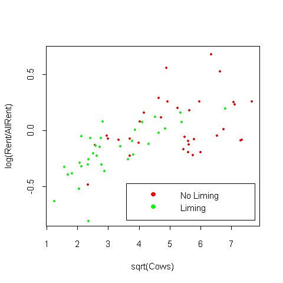

| / Home |
Keywords: multiple regression, variance modelling.
The data were collected to study the variation in rent paid in 1977 for agricultural land planted to alfalfa in Minnesota. The data include:
| Variable | Description | |
| Rent | average rent per acre planted to alfalfa | |
| AllRent | average rent paid for all tillable land | |
| Cows | density of diary cows (number per square mile) | |
| Pasture | proportion of farmland used as pasture | |
| Liming | Yes if liming is required to grow alfalfa; No otherwise | |
Sanford Weisberg writes:
The unit of analysis is a county in Minnesota; the 67 counties with appreciable rented farmland are included.
Alfalfa is a high protein crop that is suitable feed for dairy cows. It is thought that rent for land planted to alfalfa relative to rent for other agricultural purposes would be higher in areas with a high density of dairy cows and rents would be lower in counties where liming is required, since that would mean additional expense.
Data File (tab-delimited text)
Weisberg, S. (1985). Applied Linear Regression. Wiley, New York. Problem 6.5. Douglas Tiffany is cited as the original source.

|
Home - About Us -
Contact Us Copyright © Gordon Smyth |